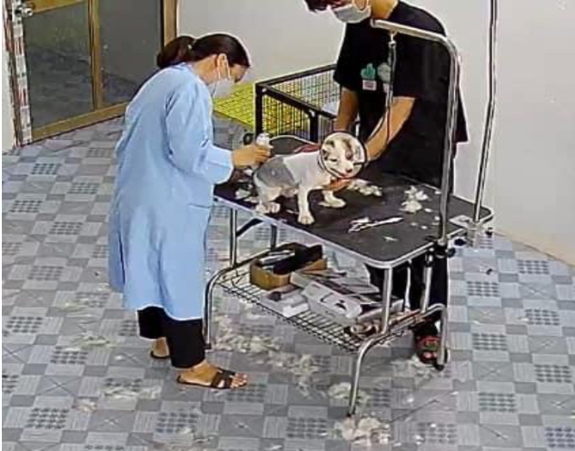

NÂNG CAO TAY NGHỀ, THỰC TIỄN CỦA GIÁO VIÊN
Đội ngũ giáo viên dạy nghề có chất lượng đóng vai trò rất quan trọng trong việc nâng cao chất lượng đào tạo. Vì vậy, Trường Cao đẳng KT - KT Vĩnh Phúc luôn quan tâm, tạo điều kiện để giáo viên được tham gia các lớp đào tạo, bồi dưỡng nâng cao năng lực chuyên môn, kỹ năng nghề, nghiệp vụ sư phạm, phương pháp giảng dạy đạt chuẩn; tạo điều kiện cho nhà giáo, cán bộ quản lý tham gia các lớp đào tạo, bồi dưỡng chuẩn hóa, nâng cao về trình độ chuyên môn, kỹ năng nghề, nghiệp vụ sư phạm; trình độ tin học, ngoại ngữ...
Trước sự phát triển nhanh về khoa học công nghệ, nếu giáo viên dạy nghề không tiếp cận kịp với công nghệ cao, đặc biệt là đáp ứng cuộc cách mạng 4.0 hiện nay sẽ dẫn đến đào tạo học viên sai định hướng và không giải quyết tốt vấn đề việc làm đối với người học. Vì vậy, hằng năm khoa Kỹ thuật nông nghiệp phối hợp với các doanh nghiệp trong lĩnh vực chăn nuôi thú y có công nghệ cao để tiếp cận với máy móc, thiết bị, từ đó nghiên cứu khoa học, biên soạn giáo trình, giúp giáo viên tích lũy được kinh nghiệm nghề nghiệp và thực tiễn sản xuất để truyền đạt cho học sinh những kiến thức, kỹ năng sát với thực tiễn.
Hình ảnh giáo viên nâng cao tay nghề về chăm sóc thú cưng
Hình ảnh giáo viên nâng cao tay nghề khám, điều trị bệnh cho thú cưng